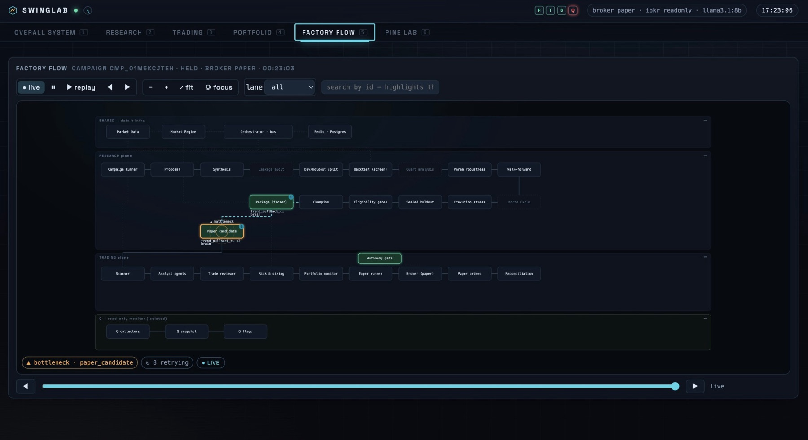
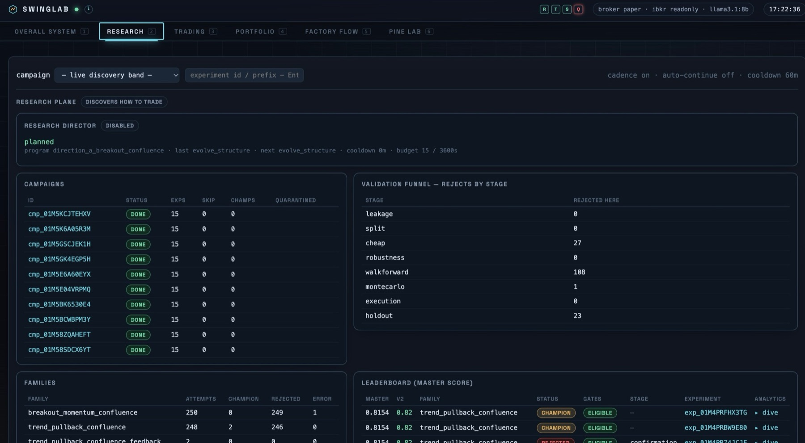
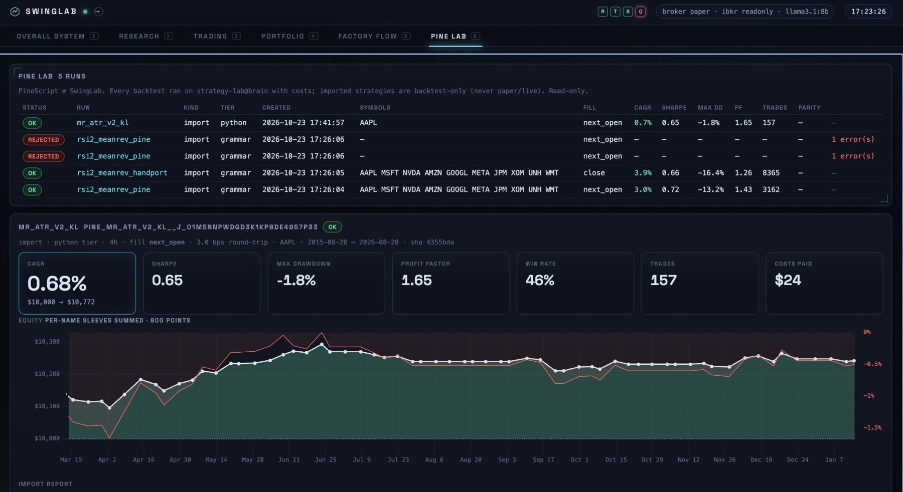
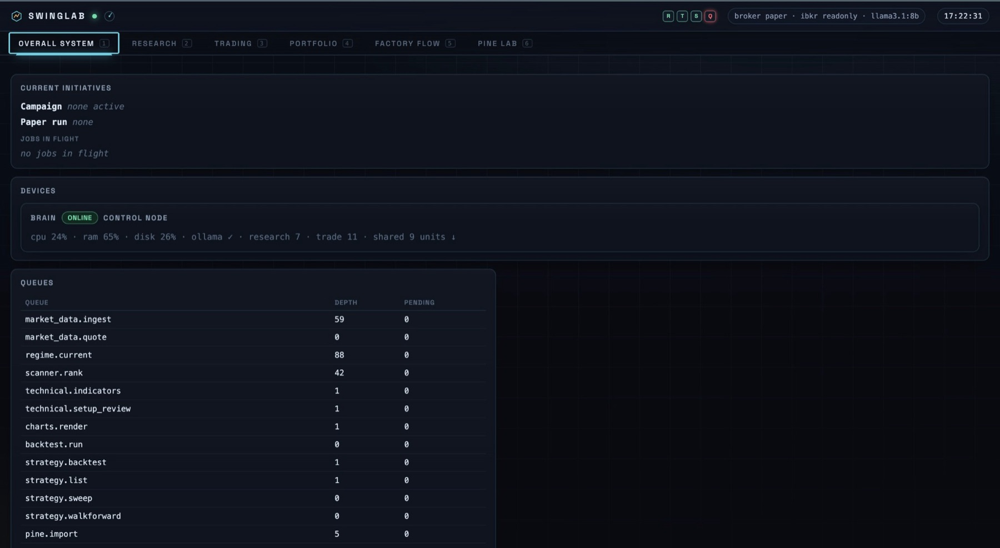

Software · Q ecosystem · Research pipeline · Paper trading only
SwingLab
A distributed research and portfolio system that searches for swing-trading rules, pushes every candidate through a staged validation funnel, and only then lets the survivors trade, on a simulated paper account. Research and educational project; not investment advice and no real money.
Dashboard








Problem
Most simple trading ideas look good in a backtest and fail afterwards, because of overfitting, look-ahead leaks, ignored costs, and luck. I wanted a system that treats every idea with suspicion, tests it the same strict way every time, and keeps a hard wall between research, simulated trading, and any real money.
What I did
Designed SwingLab as a set of deterministic workers and local language-model agents coordinated through queues, with a research plane that discovers and validates rules, a trading plane that paper-trades only validated candidates, and a read-only dashboard that shows everything.
My role: I design the architecture and the safety rules, write the specifications, approve each build step, and verify results. AI coding agents write much of the code under those rules.
How
- Deterministic first: workers on the Brain machine do the data ingestion, indicators, backtests, and scoring in Python. Local language models (Ollama) are used only for review and synthesis steps where reasoning is needed, and Claude is used for orchestration and review, not as a trading actor.
- Validation funnel: each candidate passes, in order, a leakage audit, a development/holdout split, a cost screen, parameter robustness, walk-forward testing, Monte Carlo, execution stress, and a sealed holdout the research never sees. Rejects are counted at every stage.
- Pine Lab: imports external PineScript strategies, checks them against a grammar, and backtests them with costs (for example 3 bps round trip). Imports that fail the check are rejected with errors. Imported strategies are backtest-only and are never paper or live traded.
- Safety by design: a staged autonomy ladder (disabled, dry run, paper, live) with signed limits (position sleeve, exposure, daily loss, drawdown, orders per day) and halts that block new entries. The dashboard is visualization only, with no order controls. Claude never places, stages, or approves orders, no other project gets broker credentials, and any live order would need my explicit approval.
- Observability: a six-view dashboard (overall system, research, trading, portfolio, factory flow, Pine Lab) and an isolated monitor in the Q ecosystem that only reads.
Results
- A live system on my own hardware: orchestrator, worker fleet, and dashboard running on Brain, with a paper trader running continuously since October 15, 2026.
- Ten completed research campaigns of 15 experiments each. The validation funnel does its job: in the run shown, most candidates were rejected at the cost screen (27), walk-forward (108), and the holdout (23), with only a handful surviving to champion status.
- Strategy import works end to end: five Pine Lab runs, including two rejected by the grammar check, and honest backtest numbers for the ones that passed (for example a Python mean-reversion import with 0.7% CAGR, Sharpe 0.65, and max drawdown 1.8% on one stock). Modest results are expected and are the point: nothing is promoted on a good-looking curve alone.
- Hard safety limits that I verify: paper-only trading, visualization-only dashboard, and signed risk limits.
Simulated paper trading only. Nothing here is investment advice, and no real money is traded.